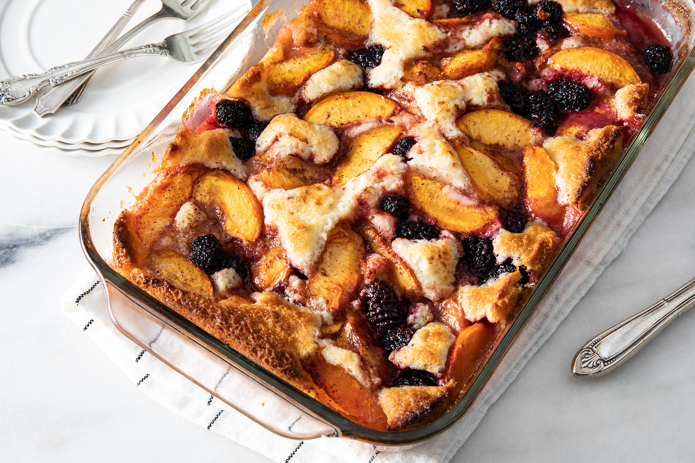

Peach & Blackberry Cobbler

Description:
What could be a more perfect ending to a summertime meal than easy peach cobbler with a twist? Savor the flavors of summer with sliced fresh peaches cooking away with berries, butter and spices.
A dollop of fresh whipped cream or cold vanilla ice cream truly makes it the perfect way to end a summer night.
Ingredients:
- Peeled and sliced fresh peaches
- Fresh blackberries
- White sugar
- Ground cinnamon
- Lemon juice
- Butter
- Flour
- Baking Powder
- Salt
- Milk
Instructions:
- Preheat oven to 350 degrees F
- Mix peaches, blackberries, 1/4 cup sugar, cinnamon, and lemon juice in a bowl.
- Pour butter into a 9x13-inch glass baking dish and evenly coat the bottom and sides.
- Whisk flour, 1 cup sugar, baking powder, and salt in a bowl; mix in milk, stirring just to moisten dry ingredients.
- Pour batter into prepared baking dish and distribute fruit mixture evenly over the batter.
- Bake in the preheated oven until cobbler is golden brown, about 45 minutes.